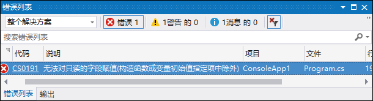

首页 > 编程笔记
C#常量（const和readonly关键字）的用法
常量就是程序运行过程中，不能改变值的量。
现实生活中的居民身份证号码、数学运算中的 π 值等都是不会发生改变的量，它们都可以定义为常量。
常量可以分为不同的类型，如 98、368 是整数类型的常量，3.14、0.25 是实数常量，即浮点类型的常量，'m'、'r' 是字符类型常量。
C# 常量主要有两种，分别是 const 常量和 readonly 常量，下面分别对这两种常量进行讲解。
const 常量的值必须在声明时就进行初始化，而且之后不可以再进行更改。
例如，声明一个正确的 const 常量，同时再声明一个错误的 const 常量，以便读者对比参考，代码如下。
从字面意思上看，readonly 常量可以进行动态赋值。但需要注意的是，这里的动态赋值是有条件的，它只能在构造函数中进行赋值，代码如下。
现实生活中的居民身份证号码、数学运算中的 π 值等都是不会发生改变的量，它们都可以定义为常量。
常量可以分为不同的类型，如 98、368 是整数类型的常量，3.14、0.25 是实数常量，即浮点类型的常量，'m'、'r' 是字符类型常量。
C# 常量主要有两种，分别是 const 常量和 readonly 常量，下面分别对这两种常量进行讲解。
C# const 常量
在 C# 中提到的常量，通常指的是 const 常量。const 常量也叫静态常量，它在编译时就已经确定了值。const 常量的值必须在声明时就进行初始化，而且之后不可以再进行更改。
例如，声明一个正确的 const 常量，同时再声明一个错误的 const 常量，以便读者对比参考，代码如下。
const double PI = 3.1415926; //正确的声明方法 const int MyInt; //错误：定义常量时没有初始化
C# readonly 常量
readonly 常量是一种特殊的常量，也称为动态常量。从字面意思上看，readonly 常量可以进行动态赋值。但需要注意的是，这里的动态赋值是有条件的，它只能在构造函数中进行赋值，代码如下。
class Program
{
readonly int Price; //定义一个readonly常量
Program() //构造函数
{
Price = 368; //在构造函数中修改readonly常量的值
}
static void Main(string[] args)
{
}
}
如果要在构造函数以外的位置修改 readonly 常量的值，例如在 Main 方法中进行修改，代码如下。
class Program
{
readonly int Price; //定义一个readonly常量
Program() //构造函数
{
Price = 368; //在构造函数中修改readonly常量的值
}
static void Main(string[] args)
{
Program p = new Program(); //创建类的对象
p.Price = 365; //试图修改readonly常量的值
}
}
这时再运行程序，将会出现图1所示的错误提示。

图1：在构造函数以外的位置修改 readonly 常量的值出现的错误提示
图1：在构造函数以外的位置修改 readonly 常量的值出现的错误提示
const 常量与 readonly 常量的区别
C# 中 const 常量与 readonly 常量的主要区别如下：- const 常量必须在声明时初始化，而 readonly 常量则可以延迟到在构造函数中初始化。
- const 常量在编译时就被解析，即将常量的值替换成了初始化的值；而 readonly 常量的值需要在运行时确定。
- const 常量可以定义在类或者方法体中，而 readonly 常量只能定义在类中。
关注公众号「站长严长生」，在手机上阅读所有教程，随时随地都能学习。内含一款搜索神器，免费下载全网书籍和视频。

微信扫码关注公众号